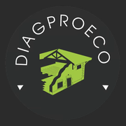

Installez l'appli Diagproeco
Vos demandes de devis de diagnostics en une minute, depuis votre écran d'accueil. Gratuite, sans compte à créer.
Un geste, et l'icône Diagproeco se met sur votre écran.
C'est fait
L'icône Diagproeco est sur votre écran. Touchez-la pour demander un devis.
Sur votre téléphone
Scannez ce code avec l'appareil photo : la page s'ouvre et vous guide.
Diagproeco · 423 Grande Rue, 01340 Attignat · diagproeco.fr